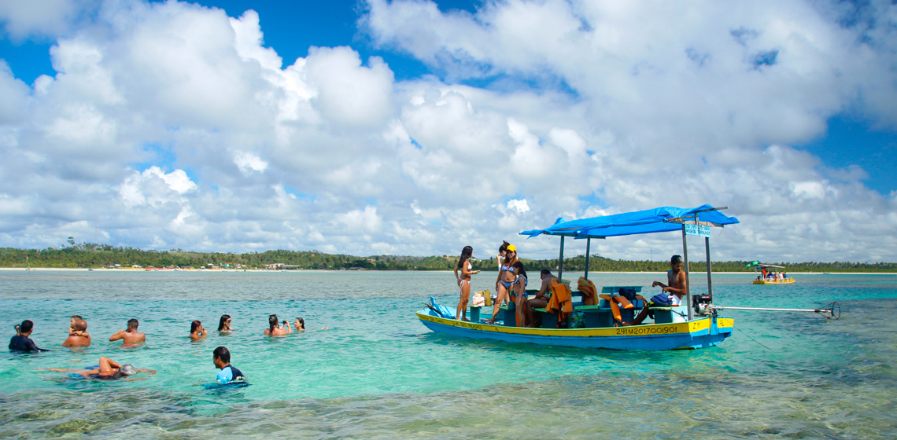
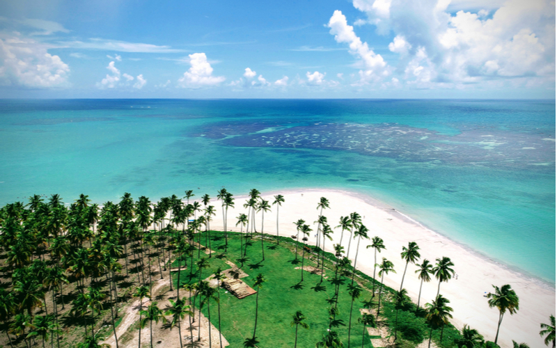

Locais Disponíveis:
- Fernando de Noronha
- Gramado
- Costa dos Corais
- Foz do Iguaçu
Bem-vindo a Fernando de Noronha, um dos destinos mais paradisíacos do Brasil! Este
arquipélago, composto por 21 ilhas e ilhotas, está localizado a cerca de 350 km da costa
nordeste do país, e é mundialmente conhecido por suas paisagens deslumbrantes, praias de águas
cristalinas e rica biodiversidade.
O que esperar de Fernando de Noronha?
Fernando de Noronha é um destino perfeito para quem busca conexão com a natureza e experiências
inesquecíveis. É um local onde a preservação ambiental é prioridade, e cada visitante pode
desfrutar de belezas naturais em um ambiente protegido. As praias de Noronha estão entre as mais
belas do mundo, com destaque para a Baía do Sancho, eleita diversas vezes como a melhor praia do
planeta.
Principais Atrações:
Praias Incríveis: Entre as praias mais famosas estão a Baía do Sancho, Baía dos Porcos, Cacimba
do Padre e Praia do Leão. Cada uma delas oferece uma experiência única, desde águas tranquilas
para mergulho até ondas perfeitas para o surfe.
Mergulho e Vida Marinha:
Noronha é um dos melhores destinos de mergulho do
mundo. As águas
claras e a biodiversidade marinha são impressionantes. Tartarugas marinhas, golfinhos, tubarões
e uma infinidade de peixes coloridos fazem parte do espetáculo subaquático.
Trilhas e Mirantes:
O arquipélago oferece diversas trilhas ecológicas que
levam a mirantes
deslumbrantes. Uma das mais famosas é a Trilha do Atalaia, que leva a uma piscina natural cheia
de vida marinha.
Projeto TAMAR:
Uma visita ao Projeto TAMAR é imperdível para aprender mais
sobre a
preservação das tartarugas marinhas e a importância da sustentabilidade na ilha.
Experiências Imperdíveis:
Passeio de Barco: Um passeio de barco ao redor da ilha é uma das melhores formas de observar
golfinhos rotadores, que são frequentes na região.
Mergulho de Cilindro ou Snorkeling: Mergulhe nas águas cristalinas e explore recifes de corais e
a vida marinha.
Por do Sol no Forte do Boldró: Um dos momentos mais mágicos de Noronha é assistir ao pôr do sol
no Forte do Boldró, com uma vista panorâmica incrível do oceano.
Descubra Gramado, uma das cidades mais charmosas e procuradas do Brasil!
Localizada na Serra
Gaúcha, no estado do Rio Grande do Sul, Gramado é famosa por sua arquitetura de inspiração
europeia, clima ameno, gastronomia irresistível e eventos culturais que encantam visitantes o
ano todo. Seja no inverno, com suas baixas temperaturas e até neve ocasional, ou durante as
outras estações, Gramado oferece uma experiência única que combina tradição, natureza e lazer.
O que esperar de Gramado?
Gramado é um destino que mescla o charme das montanhas com um toque europeu, refletido nas
construções em estilo bávaro, nas ruas floridas e nos deliciosos cafés e restaurantes. Conhecida
por seu clima frio, a cidade é um refúgio para quem deseja desfrutar de momentos românticos,
familiares ou de descanso em meio a uma paisagem encantadora.
Principais Atrações:
Lago Negro: Um dos pontos mais icônicos de Gramado, o Lago Negro é perfeito para passeios
tranquilos de pedalinho ou caminhadas ao redor de suas margens, cercado por pinheiros e flores
que embelezam o cenário.
Rua Coberta: O coração gastronômico e cultural da cidade, a Rua Coberta é um local imperdível
para passear, fazer compras e aproveitar deliciosos cafés, bares e restaurantes.
Mini Mundo: Uma atração encantadora para todas as idades, o Mini Mundo é um parque ao ar livre
que reproduz miniaturas detalhadas de construções famosas do mundo todo, proporcionando uma
viagem cultural divertida.
Museu de Cera Dreamland: Com réplicas de cera de celebridades e personagens famosos, esse museu
é uma ótima pedida para quem busca uma experiência lúdica e divertida.
Igreja Matriz São Pedro: A igreja, feita de pedra basalto, é um símbolo de Gramado e um dos
pontos turísticos mais fotografados, especialmente em sua decoração natalina.
Eventos que você não pode perder:
Natal Luz: Um dos maiores eventos de Natal do mundo, o Natal Luz transforma Gramado em uma
cidade mágica com desfiles, shows de luzes, corais e decoração espetacular. Acontece de novembro
a janeiro e atrai turistas de todas as partes.
Festival de Cinema de Gramado: Realizado em agosto, é um dos mais prestigiados festivais de
cinema da América Latina, atraindo celebridades e cineastas para a cidade.
Páscoa em Gramado: O "Chocofest" celebra a Páscoa com desfiles temáticos, decorações e, claro,
muito chocolate.
Experiências Gastronômicas:
Gramado é o paraíso para os amantes de chocolate e fondue! A cidade conta com fábricas de
chocolates artesanais, onde você pode comprar e degustar as delícias locais. Além disso, os
restaurantes oferecem o tradicional café colonial, com uma variedade incrível de pães, tortas,
frios e bebidas típicas. A experiência gastronômica não estaria completa sem experimentar um
fondue, seja de queijo, carne ou chocolate, uma das especialidades da cidade.
Passeios e Aventuras:
Snowland: Gramado oferece a única estação de esqui indoor do Brasil! O Snowland é o lugar
perfeito para quem deseja ter uma experiência de inverno, com esqui, patinação no gelo e muita
diversão na neve artificial.
Tour do Vale dos Vinhedos: Aproveite a proximidade de Gramado para conhecer as vinícolas do Vale
dos Vinhedos, onde você poderá fazer degustações de vinhos finos e conhecer o processo de
produção.
Prepare-se para conhecer a Costa dos Corais, um dos destinos mais deslumbrantes do
Brasil! Localizada no litoral nordeste, entre os estados de Pernambuco e Alagoas, a Costa dos
Corais se destaca por suas praias de águas cristalinas, piscinas naturais, recifes de corais e
uma biodiversidade marinha impressionante. Com mais de 120 km de extensão, essa região é ideal
para quem busca relaxamento em meio à natureza exuberante e experiências aquáticas
inesquecíveis.
O que esperar da Costa dos Corais?
A Costa dos Corais é perfeita para aqueles que amam sol, mar e natureza. O destino é conhecido
por suas piscinas naturais, formadas por recifes de corais, e praias de areia branca, com águas
mornas e transparentes. O local também abriga a Área de Proteção Ambiental Costa dos Corais, a
maior área de preservação marinha do Brasil, o que garante a conservação das belezas naturais e
da rica vida marinha da região.
Principais Atrações:
Maragogi (AL): Conhecida como o "Caribe Brasileiro", Maragogi é o ponto alto da Costa dos
Corais. Suas galés (piscinas naturais) são famosas por suas águas cristalinas, perfeitas para
mergulho com snorkel, onde é possível observar peixes coloridos e recifes de corais.
São Miguel dos Milagres (AL): Um destino que combina tranquilidade e beleza natural, São Miguel
dos Milagres é conhecido por suas praias quase intocadas e seus passeios de jangada até as
piscinas naturais. É o local ideal para quem busca sossego e conexão com a natureza.
Porto de Pedras (AL): Além das belíssimas praias, Porto de Pedras é o lar do famoso Projeto
Peixe-Boi, que trabalha para a preservação dessa espécie ameaçada. Os turistas podem fazer
passeios de barco para ver os peixes-boi em seu habitat natural.
Japaratinga (AL): Outro destino encantador, Japaratinga oferece praias de águas mornas e
cristalinas, com uma infraestrutura acolhedora. Perfeita para quem busca praias tranquilas e
menos movimentadas.
Tamandaré (PE): No extremo norte da Costa dos Corais, Tamandaré abriga a Praia dos Carneiros,
uma das mais bonitas do Brasil, famosa por sua paisagem formada por coqueiros, areia branca e
águas claras. A Capela de São Benedito, à beira-mar, é um dos cartões-postais da região.
Experiências Imperdíveis:
Mergulho nas Piscinas Naturais: As galés de Maragogi são as mais conhecidas, mas toda a região
oferece piscinas naturais espetaculares para mergulho. O passeio de barco até esses pontos é uma
das atividades mais procuradas pelos turistas.
Passeio de Jangada: Em São Miguel dos Milagres e Porto de Pedras, o passeio de jangada até as
piscinas naturais ou para observar os peixes-boi é uma experiência única.
Trilhas e Ecoturismo: A Costa dos Corais é um excelente destino para ecoturismo. Trilhas
ecológicas pela Mata Atlântica permitem o contato com a fauna e flora locais, proporcionando uma
experiência inesquecível.
Projeto Peixe-Boi: Em Porto de Pedras, o projeto é uma oportunidade única de conhecer mais sobre
a preservação do peixe-boi e até mesmo avistar esses animais em passeios guiados.
Gastronomia Local:
A Costa dos Corais oferece uma deliciosa gastronomia, com base em frutos do mar frescos e
sabores típicos do nordeste brasileiro. Pratos como moqueca, peixada e lagosta estão entre as
especialidades, muitas vezes preparados com um toque regional que inclui leite de coco e
especiarias. Não deixe de experimentar as tapiocas recheadas e os doces de frutas tropicais que
são vendidos nas praias e nas pequenas vilas da região.
 
Bem-vindo a Foz do Iguaçu, um dos destinos mais impressionantes do mundo! Localizada no estado
do Paraná, no sul do Brasil, Foz do Iguaçu é conhecida por abrigar as majestosas Cataratas do
Iguaçu, uma das Sete Maravilhas Naturais do Mundo. Além dessa maravilha natural, a cidade
oferece uma série de atrações que encantam turistas de todas as partes, incluindo contato com a
natureza, cultura rica e experiências únicas na tríplice fronteira entre Brasil, Argentina e
Paraguai.
O que esperar de Foz do Iguaçu?
Foz do Iguaçu é o destino perfeito para quem deseja se maravilhar com a grandiosidade da
natureza e vivenciar uma combinação única de culturas e paisagens. O destaque da cidade, sem
dúvida, são as Cataratas do Iguaçu, mas há muito mais para explorar: parques ecológicos,
aventuras ao ar livre e uma rica diversidade cultural.
Principais Atrações
Cataratas do Iguaçu: O principal cartão-postal de Foz, as Cataratas do Iguaçu são formadas por
mais de 270 quedas d’água, com até 80 metros de altura. Localizadas dentro do Parque Nacional do
Iguaçu, declarado Patrimônio Natural da Humanidade pela UNESCO, as cataratas podem ser visitadas
tanto pelo lado brasileiro quanto pelo lado argentino, oferecendo vistas espetaculares e
passeios emocionantes, como o Macuco Safari, um passeio de barco que leva os turistas até a base
das quedas.
Parque das Aves: Ao lado do Parque Nacional do Iguaçu, o Parque das Aves é uma atração
imperdível para quem ama natureza e animais. Neste parque, você poderá caminhar por viveiros
gigantes e interagir com mais de 1.300 aves de 150 espécies diferentes, muitas delas ameaçadas
de extinção.
Usina de Itaipu: A Itaipu Binacional é a maior usina hidrelétrica em geração de energia do mundo
e uma das maravilhas da engenharia moderna. Os visitantes podem fazer passeios guiados para
conhecer a grandiosidade da usina e aprender sobre o impacto dessa obra para o Brasil e o
Paraguai.
Marco das Três Fronteiras: Este local histórico marca o ponto de encontro entre Brasil,
Argentina e Paraguai. Além de oferecer uma vista panorâmica dos três países separados pelos rios
Iguaçu e Paraná, o Marco das Três Fronteiras é um local de eventos culturais e oferece um show
noturno com luzes, música e danças típicas dos três países.
Templo Budista e Mesquita Omar Ibn Al-Khattab: Foz do Iguaçu é uma cidade multicultural, e o
Templo Budista e a Mesquita são exemplos dessa diversidade. O Templo Budista oferece
tranquilidade e belas vistas da cidade, enquanto a Mesquita é um símbolo da forte presença da
comunidade islâmica na região.
Experiências Imperdíveis
Passeio de Helicóptero: Para uma vista inesquecível das Cataratas, faça um passeio de
helicóptero. Esse sobrevoo oferece uma perspectiva única das quedas d’água e da vasta área de
mata que cerca o Parque Nacional do Iguaçu.
Caminhada nas Passarelas das Cataratas: Tanto no lado brasileiro quanto no argentino, há trilhas
e passarelas que permitem chegar bem perto das quedas. A trilha brasileira oferece uma vista
panorâmica, enquanto a trilha argentina proporciona uma experiência mais imersiva, passando por
cima e ao lado das quedas.
Macuco Safari: Uma das experiências mais emocionantes de Foz, o Macuco Safari é um passeio de
barco que leva os turistas bem próximo às quedas d’água, proporcionando uma aventura cheia de
adrenalina e muita água!
Gastronomia Local
Foz do Iguaçu oferece uma rica variedade gastronômica, graças à diversidade cultural da região.
Você encontrará desde pratos típicos brasileiros, como churrasco e feijoada, até influências das
cozinhas árabe e argentina. Não deixe de provar as deliciosas empanadas argentinas e, claro,
experimentar o autêntico assado argentino em um dos restaurantes na fronteira.